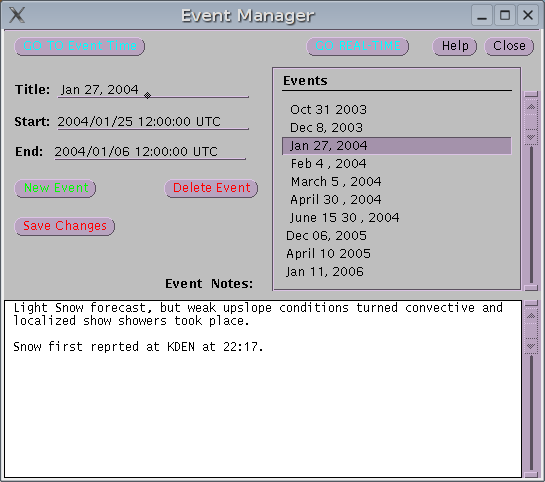

|  |
Event Manager is a tool which is used to record and retrieve weather events. A list of weather events is presented in a list. Specific information about the selected event is displayed and the user may update or add to the information and save the result to disk. Event Manager works in conjunction with the WSDM displays and the data scrubbing utilities; Event Manager can be used to send the display to the chosen event. When a new event has been added and saved, the data for that event is retained indefinitely on the local disk. WSDM systems typically have 30 days of history stored on the local display. One must add a new event within 30 days of the event date or the data will already have been scrubbed off your disk. WSDM display typically can store hundreds of days of Event data in addition to the latest 30-60 days.
Selecting GOTO Event sends the WSDM display to the start time of the weather event.
Puts the WSDM display into Real-Time mode, looking at current data.
Selecting ADD creates a new, blank event. By default Event Manager chooses a start time, end time and picks a default title. Select the new event from the list and edit the fields as desired. Choosing Save commits the changes to disk and prevents data in the new event from being erased.
Selecting Delete removes the weather event from the list. This
change is not committed to disk until the user selects
Save . Note: Once an event has been removed from the event list
and saved, the data for this time period will then be scrubbed from this
disk of it is more than 30 days old. This data will not re-appear once
it has been removed from the list. Be sure you have no need for an older
event, before you remove it.
Selecting Help brings up this document.
Commit changes to disk. The Data scrubbing utility;
Janitor uses the information saved onto disk to decide what
data to save.
Close iconifys the application. Event Manager continues to
run and can be re-opened by clicking on the icon or on the task button
in the task bar.
Select an event from the Event List. Then Select and edit the title, hitting Select an event from the Event List. Then Select and edit the Start Time, hitting Select an event from the Event List. Then Select and edit the End Time, hitting You may place arbitrary text in the notes area of the Event Manager window. Select Save
to commit the changes to disk.
Help Back to top
Save Changes Back to top
Close Back to top
Title: Back to top
Start: Back to top
End: Back to top
Event Notes: Back to top